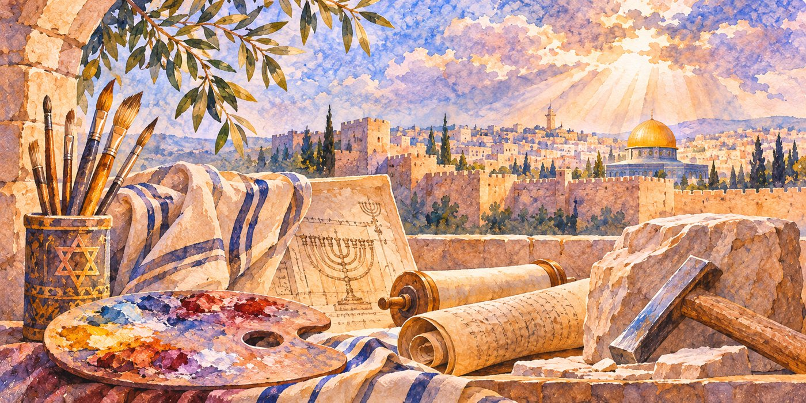

ЗАЧЕМ я начал ЭТОТ БЛОГ ?

Этот блог – моя попытка осмыслить место художника Израиля на нашей земле, внутри этих грандиозных планов Божьих, провозглашенных еще пророками нашими более трех тысяч лет назад.
Во мне ведут непрекращающийся диалог еврей с художником. Я верю, что мы живем в такие времена, когда Бог восстанавливает и собирает Свой народ. А это значит, среди прочего, Он восстанавливает ПРИЗВАНИЕ Израиля, его культуру, искусство. Ведь без этого не может быть народа…
Этот блог - размышление, стремление понять самого себя, свое призвание. Мой блог – попытка разобраться кто мы, откуда, куда идем…
«Всякий дар совершенный нисходит от Отца светов» (Иак.1:17). Он так много одарил евреев творческими талантами. Он призывает нас для священного служения Ему.
В это самое время художнику-израильтянину жизненно необходимо принять и осмыслить заповеди Божьи, принять в дар «сердце новое, и дух новый».
Нам необходимо посвятить себя, позволяя Богу взять из плоти нашей сердце каменное, и принять сердце плотяное» (Иез.36:26), дабы подняться до уровня служения Творцу, некогда возвысившего Бецалеля (синод.: Веселеил (Исх.31:2)) в пустыне Синайской по выходе из Египта.
Нам предстоит научиться творить в заповедях Господних, соблюдая Его уставы.
Этот блог – моя попытка осмыслить место художника Израиля на нашей земле, внутри этих грандиозных планов Божьих, провозглашенных еще пророками нашими более трех тысяч лет назад.
Мы с вами живем в интересное и очень важное время. Хотя, наверное, неважных времен не бывает. Но это наше с вами время, без сомнения, особенное. (последние времена, так его называет Писание….)
В Израиле происходят потрясающие процессы… восстановление народа Божьего здесь в Обетованной земле, земле обещанной отцам нашим и нам, их детям.
Существует множество точек зрения на все это, на Израиль, на то, что здесь происходит.
И, на мой взгляд, важно, чтобы израильтяне, собранные Всевышним из всех стран и живущие здесь могли бы поделиться своим свидетельством, своим пониманием ситуации, своими размышлениями о будущем. Особенно меня волнует будущее отношений между Израилем и Церковью.
читайте также статью "Обо мне. ВИЗИТКА"
автор: Эфраим Калиш /TORAART/